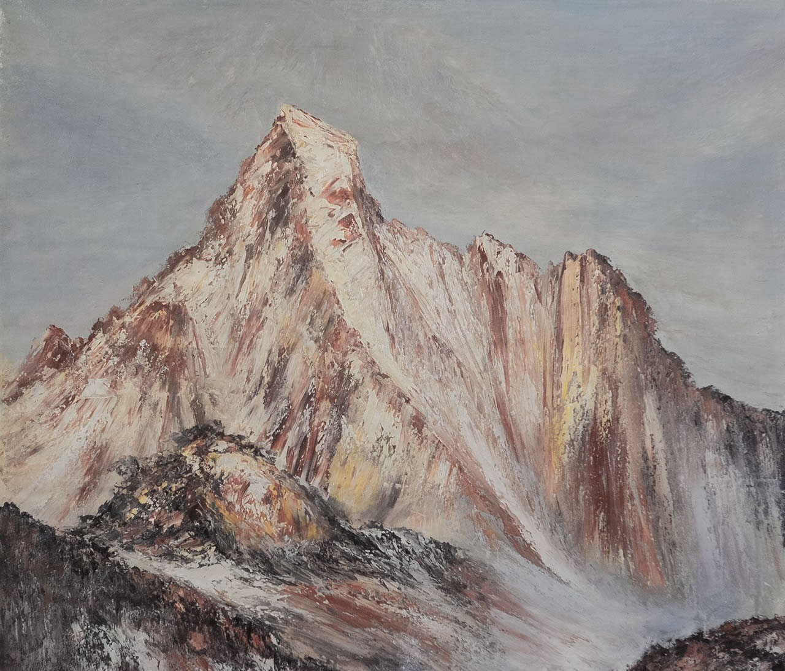

Chants From the Valley of Sighs
Earthly world — passing, deceptive, and full of suffering

Scores & Recordings
Recording
Summary
Chants From the Valley of Sighs is an organ suite shaped by the Christian understanding of earthly life as a sorrowful passage toward a transfigured existence beyond it. Oscillating between neobaroque gravity and a more fragmented contemporary discourse, the work sets the dissonant gloom of the here and now against flashes of a consoling elsewhere.
Imprint
| Orchestration | Organ |
|---|---|
| Lyrics | — |
| Duration | 12:41′ |
| State | Finished |
| Completed | 2015 |
| Premiered | 2015, during the Sigismund Toduță Festival at AMGD |
| Performed by | Prof. Dr. Ursula Philippi |
| Honors | Second Prize at the Sigismund Toduță Festival held by AMGD in 2015 |
| Copyright | Claudius Iacob |
Program notes
In the realm of Christian spirituality, the Valley of Sighs is the name given to the earthly world, passing, deceptive, and full of suffering, in contrast with the paradisal places prepared for those who are saved, the redeemed. Professor Victor Aga offers perhaps the most eloquent formulation of the concept in his dictionary of Christian terms, Simbolica biblică şi creştină, where, alongside a rich semantic field, he preserves the poetic force typical of Eastern theological language: “The valley of tears, or the valley of sighs, is the name of the earthly world and of life on earth in contrast to the heights of heaven and its blessed life. It symbolizes the hardships and continual temptations with which the Christian struggles, which he must overcome, shedding many tears for his own sins and for those of others.”
Seen in this light, any musical embodiment of the here is a possible chant from the Valley of Sighs, yet the present music also encloses within itself something of the concept described above. Beginning with the instrumentation, the pipe organ remains, despite its origins, despite the substantial secular literature written for it, and despite sustained efforts of secularization directed at it, an eminently religious instrument: it is physically bound to countless houses of prayer, and its sound remains emblematic of Catholic and Protestant liturgical space. One then comes to the musical score itself, which symbolically recovers the spirit of Bachian toccatas, chorales, and concertos.
Accordingly, the character of my work oscillates between neobaroque and neoclassical. My music combines, with gravity, sobriety, and at times fear, the meticulous polyphonies and imposing homophony of my predecessors with a fragmented discourse unfolding across two or three autonomous planes. It is a continual pendulation, a struggle between a dissonant, gloomy, chaotic, all-consuming here and the sad yet consoling flashes of an elsewhere, or then, luminous and gentle.
I wrote the work in January-February 2015, chiefly motivated by participation in the organ composition competition organized by the Gheorghe Dima Music Academy of Cluj during the first edition of the Sigismund Toduță Festival. At the same time, somewhat “guilty” for the existence of this piece is Professor Teodor Țuțuianu, whose master’s course, Notions of Heterophony, I attended during that period. A substantial portion of the first part of the present suite was written — on the basis of an incipit or thematic head provided by him — as the practical assignment for the final examination of that course.